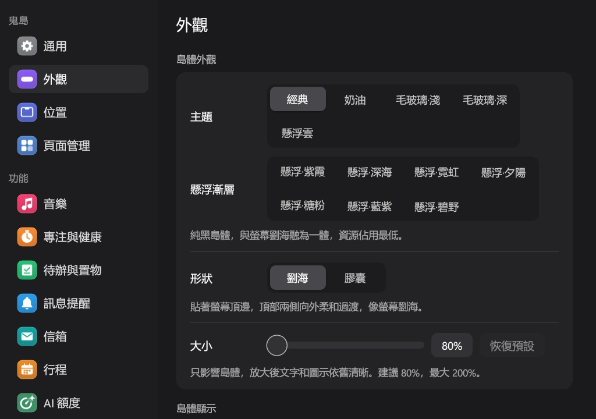
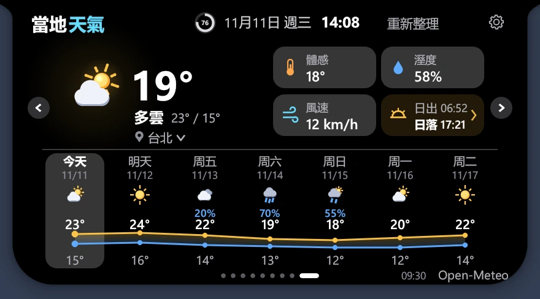

SHAPE · 01
形態自由
劉海、膠囊與四向停靠，拖曳有拿起與吸附。
SHAPE · 01
形態自由
貼齊上緣的劉海或離邊一點的膠囊都能選，上下左右四向停靠；拖曳時有拿起、跟手、吸附與落位動效，多螢幕與縮放比例也對得上，不會停在螢幕外。
移開或點外面即收起Windows 桌面靈動島 · 繁體台灣版
還是你每天都會看一眼的資訊層。通知、天氣、行程、音樂與 AI 額度收進螢幕上緣的一小條，抬眼就看得到，不必為了看一句話切走整個視窗。
六件事，收進同一條島
劉海、膠囊與四向停靠，拖曳有拿起與吸附。
貼齊上緣的劉海或離邊一點的膠囊都能選，上下左右四向停靠；拖曳時有拿起、跟手、吸附與落位動效，多螢幕與縮放比例也對得上，不會停在螢幕外。
移開或點外面即收起LINE、Messenger、Threads、Facebook、Instagram 集中顯示。
LINE、Instagram、Threads、Facebook、Messenger 與系統通知集中到島上，頭像與來源一眼分辨；圖示右上累計未讀則數，點一下直接回到發出通知的桌面程式，不用自己找是哪一個視窗。
移開或點外面即收起播放、進度、音量與同步歌詞同一條排開。
走系統媒體控制，播放、暫停、切歌、獨立音量與進度跳轉都在島上；有歌詞就同步顯示，Spotify 的英文譯名也能找回原始歌名，沒在聽就自動讓位給其他資訊。
移開或點外面即收起當地實況、七日預報與下一個行程。
目前天氣、體感、濕度、風速、日出日落與七日高低溫一起收好；行事曆事件一併收進來，下一個會議還有多久、今天剩幾件事，抬眼就知道，不必再開行事曆。
移開或點外面即收起多家服務剩餘額度，常駐顯示重點數字。
Kimi、Claude、Gemini、Grok、DeepSeek、GLM 與中轉站額度集中一覽，常駐時只留最重要的數字；按需啟停背景更新，不用逐個開網頁確認還能不能用。
移開或點外面即收起驗證碼放大、未讀信件與寄件來源。
接上 Gmail、Outlook、Yahoo 或自訂 IMAP 後，驗證碼會單獨放大成大字，點一下就能複製；新信會點亮島上鈴鐺，IMAP 斷線也會用未讀數補回來，不會漏掉最後一封。
移開或點外面即收起不是再開一個視窗，而是把每天都會看的幾件事，收進一條不會擋住工作的位置。收起時只留時間與天氣，需要時才展開。



實機畫面 · 外觀、信箱與天氣
介面文字逐條改寫成台灣用法，再補上字型、時間格式、地名與打包方式，讓它在台灣的電腦上像原生軟體。
設定、檔案、資料夾、記憶體、螢幕、系統匣、捷徑、行事曆，照台灣人實際講法，不是逐字轉換。
天氣顯示「台灣 · 市 · 區」，不會冒出「臺灣省」；時鐘可切 12／24 小時與秒數。
奶油、毛玻璃、懸浮與漸層主題；五種吉祥物共用自製單線條動畫，身體不位移。
解壓即用、不寫登錄檔；換電腦或換資料夾直接搬走，不留下安裝殘留。
授權 鬼島台灣版衍生自 Renly1994／xiaotang-daozai（Windows 桌面靈動島），原專案以 MIT 授權釋出；依授權保留原作者版權聲明與條文，LICENSE 隨程式附上。
對外下載與授權暫時不開放。內測名額由維護者邀請發放，測試期間版本與功能仍會調整；正式開放時會在本頁公告，不另外通知。
關於內測、資料與支援
目前是內部測試，沒有對外時程；確定開放時會直接改本頁，屆時才提供下載與授權方式。
功能面沿用上游開源專案，差異在語言與在地化：全繁體台灣用語、地名與時間格式、外觀與品牌識別、免安裝打包。程式架構與模組邏輯沒有重寫。
免安裝版解壓即用，一般權限就能跑；只有要讀取需要更高權限的系統資訊時，才會請你提權。
設定、憑證與紀錄都存在你自己的電腦裡；天氣、額度、信箱這類模組是直接用你填的設定連到該服務，不經過本專案的中繼伺服器。
音樂走系統媒體控制，多數播放器都能接；訊息以 LINE、Instagram、Threads、Facebook 與系統通知為主；AI 額度與信箱則依你設定的服務而定。
島體貼齊螢幕上緣、系統匣、通知與視窗喚起都依賴 Windows 的桌面行為；目前先把 Windows 10／11 64 位元版本做好，不另外承諾其他平台。
可以。石虎、柴犬、貓、哈士奇與黃金獵犬都在設定裡直接切換，五種共用單線條動畫，尾巴、耳朵與眨眼會自己動；外掛動畫包仍可替換。